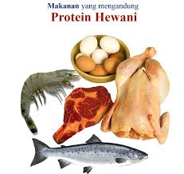

ZAT MAKANAN

Protein
Protein tersusun dari unsur-unsur karbon (C), hidrogen (H), oksigen (O), dan nitrogen (N). Beberapa protein tertentu selain mengandung unsurunsur tersebut juga mengandung unsur belerang (S) dan fosfor (P).
Protein dibentuk oleh berbagai macam asam amino (esensial dan nonesensial). Asam amino yang dibutuhkan tubuh ada 20 macam. Asam amino esensial adalah asam amino yang tidak dapat dibentuk oleh tubuh, jadi harus didatangkan dari luar. Misalnya: leusin, lisin, metionin, fenilalanin, dan sebagainya. Asam amino nonesensial adalah asam amino yang dapat dibuat sendiri oleh tubuh.
Menurut sumbernya, protein dibagi menjadi dua golongan, yaitu protein yang berasal dari hewan disebut protein hewani dan dari tumbuhan disebut protein nabati. Protein hewani merupakan protein sempurna karena mengandung asam amino esensial. Protein hewani dapat diperoleh dari daging, ikan, susu, dan telur. Sebaliknya, protein nabati merupakan protein tidak sempurna karena kandungan asam amino esensialnya kurang lengkap. Jumlahnya kurang untuk memenuhi keperluan tubuh, kecuali dari kacangkacangan, terutama kedelai.
Setelah melalui proses pencernaan, protein diserap oleh usus halus dalam bentuk asam amino. Kebutuhan protein setiap orang berbeda-beda sesuai dengan tingkat pertumbuhan dan kondisi orang tersebut. Faktor yang memengaruhi kebutuhan protein antara lain usia, berat badan, jenis kelamin, kondisi tubuh, dan penyakit. Jika kebutuhan tersebut berlebih, maka kelebihannya akan dibuang melalui ginjal dalam bentuk urea.
Fungsi protein:
– Bahan pembangun sel-sel dalam jaringan tubuh.
– Mengganti atau memperbaiki sel-sel dalam jaringan tubuh yang rusak.
– Penghasil energi.
– Membuat substansi penting, misalnya enzim dan hormon yang membantu metabolisme tubuh.
– Menjaga keseimbangan asam basa dalam tubuh